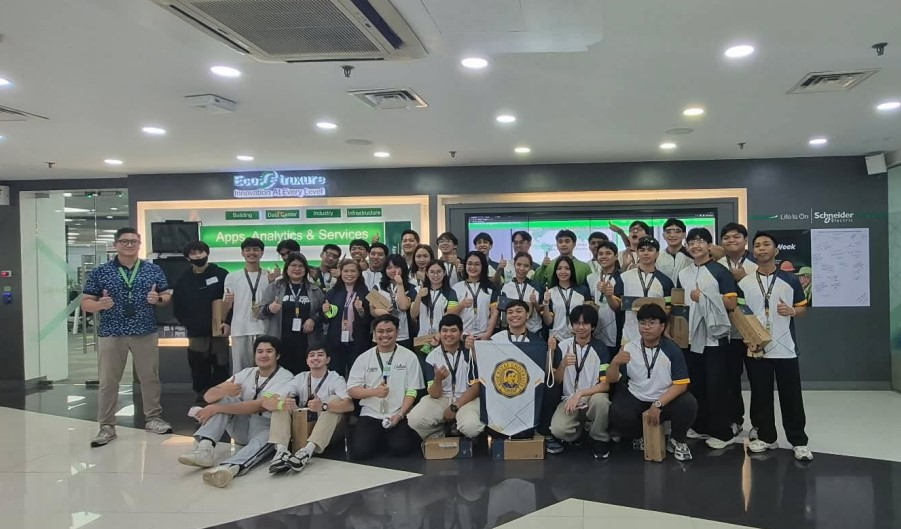

FIELDTRIP
Schneider Electric Plant Visit
On October 8, we visited the Schneider Electric Plant in Cavite to learn more about how processing hardware is built and to experience what a real production plant looks like. The visit provided an opportunity to observe an industrial environment and connect classroom learning with actual manufacturing operations.